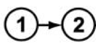
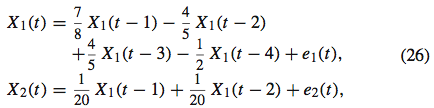
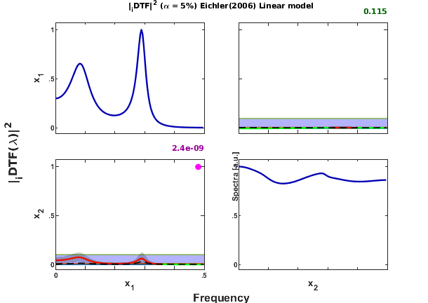
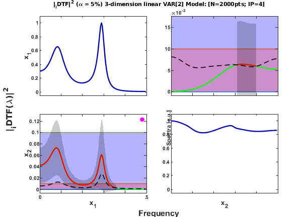

EICHLER (2006) Two-dimension VAR[2]
DESCRIPTION:
Two variate linear VAR[4] Model
x1-->x2
Eichler. On the evaluation of information flow in multivariate systems by the directed transfer function. Biol Cybern (2006) 94: 469?482
http://dx.doi.org/10.1007/s00422-006-0062-z
Example - two-dimension VAR[4].
Contents
clc; format compact nDiscard = 5000; % number of points discarded at beginning of simulation nPoints = 2000; % number of analyzed samples points flgManual = 0; chLabels = {'X_1';'X_2'}; %or %chLabels = []; u = feichler2006_ex2(nPoints, nDiscard, flgManual); [nSegLength,nChannels]=size(u);
======================================================================
Two-dimensional linear VAR[4] Model
Eichler (2006).
x1-->x2
======================================================================
Assigned "sum(100*clock)" initial state.2
======================================================================
Interaction

Equation (25) of Eichler (2006)

Data pre-processing: detrending and normalization options
flgDetrend = 1; % Detrending the data set flgStandardize = 0; % No standardization [nChannels,nSegLength] =size(u); if nChannels > nSegLength, u = u.'; [nChannels,nSegLength]=size(u); end; if flgDetrend, for i=1:nChannels, u(i,:)=detrend(u(i,:)); end; disp('Time series were detrended.'); end; if flgStandardize, for i=1:nChannels, u(i,:)=u(i,:)/std(u(i,:)); end; disp('Time series were scale-standardized.'); end;
Time series were detrended.
MVAR model estimation
maxIP = 30; % maximum model order to consider. alg = 1; % 1: Nutall-Strand MVAR estimation algorithm criterion = 1; % 1: AIC, Akaike Information Criteria nFreqs = 128; fs = 1; disp('Running MVAR estimation routine.') [IP,pf,A,pb,B,ef,eb,vaic,Vaicv] = mvar(u,maxIP,alg,criterion); disp(['Number of channels = ' int2str(nChannels) ' with ' ... int2str(nSegLength) ' data points; MAR model order = ' int2str(IP) '.']);
Running MVAR estimation routine. maxOrder limited to 30 IP=1 vaic=31721.832876 IP=2 vaic=31526.591721 IP=3 vaic=31020.858482 IP=4 vaic=30571.031993 IP=5 vaic=30577.223922 Number of channels = 2 with 2000 data points; MAR model order = 4.
Testing for adequacy of MAR model fitting through Portmanteau test
h = 20; % testing lag MVARadequacy_signif = 0.05; % VAR model estimation adequacy significance % level aValueMVAR = 1 - MVARadequacy_signif; % Confidence value for the testing flgPrintResults = 1; [Pass,Portmanteau,st,ths] = mvarresidue(ef,nSegLength,IP,aValueMVAR,h,... flgPrintResults);
====================================================================================================
MVAR RESIDURES TEST FOR WHITENESS
----------------------------------------------------------------------------------------------------
Good MAR model fitting! Residues white noise hypothesis NOT rejected.
Pass = 0.05
st = 73.0115
Granger causality test (GCT) and instantaneous GCT
alpha = 0.05; gct_signif = 0.01; % Granger causality test significance level igct_signif = 0.01; % Instantaneous GCT significance level metric = 'info'; % euc = original PDC or DTF; % diag = generalized PDC (gPDC) or DC; % info = information PDC (iPDC) or iDTF. flgPrintResults = 1; % Flag to control printing gct_alg.m results on command window. [Tr_gct, pValue_gct, Tr_igct, pValue_igct] = gct_alg(u,A,pf,gct_signif, ... igct_signif,flgPrintResults);
====================================================================================================
GRANGER CAUSALITY TEST
----------------------------------------------------------------------------------------------------
Connectivity matrix:
NaN 0
1 NaN
Granger causality test p-values:
NaN 0.8676
0.0000 NaN
Elapsed time is 0.005101 seconds.
====================================================================================================
INSTANTANEOUS GRANGER CAUSALITY TEST
----------------------------------------------------------------------------------------------------
Instantaneous connectivity matrix:
NaN 0
0 NaN
Instantaneous Granger Causality test p-values:
NaN 0.2913
0.2913 NaN
>>>> Instantaneous Granger Causality NOT detected.
====================================================================================================
Elapsed time is 0.003330 seconds.
Original DTF estimation as in Eichler (2006)
d = asymp_dtf(u,A,pf,nFreqs,metric,alpha); % DTF and asymptotic statistics %=======Overriding some default parameters for plotting and analysis======= flgPrinting = [1 1 1 2 2 0 1]; % overriding default setting flgScale = 1; flgMax = 'tci'; flgSignifColor = 3; flgColor = [1];
DTF Matrix Layout Plotting with [0 1] y-axis scale.
w_max=fs/2; strID = 'Eichler(2006) Linear model'; [hxlabel,hylabel] = xplot(strID,d,flgPrinting,fs,w_max,chLabels, ... flgColor,flgScale,flgMax,flgSignifColor); xplot_title(alpha,metric,'dtf',strID);
DTF Matrix Layout Plotting with adjusted y-axis to max DTF+IC
flgPrinting=[1 1 1 2 2 0 1]; % overriding default setting flgColor = 1; flgScale = 3; flgMax = 'tci'; flgSignifColor = 3; strTitle1 = ['3-dimension linear VAR[2] Model: ']; strTitle2 = ['[N=' int2str(nSegLength) 'pts; IP=' int2str(d.p) ']']; strTitle =[strTitle1 strTitle2]; [hxlabel,hylabel] = xplot(strID,d,flgPrinting,fs,w_max,chLabels, ... flgColor,flgScale,flgMax,flgSignifColor); xplot_title(alpha,metric, 'dtf',strTitle);